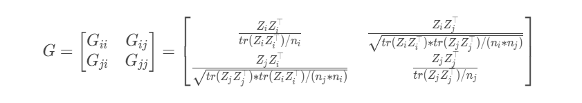
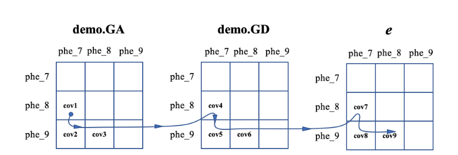

<!DOCTYPE html>


<html lang="zh-CN">


<head>
  <meta name="baidu-site-verification" content="codeva-NSg7ynviLa" />
  <meta charset="utf-8" />
    
  <meta name="viewport" content="width=device-width, initial-scale=1, maximum-scale=1" />
  <title>
    软件学习-HIBLUP |  
  </title>
  <meta name="generator" content="hexo-theme-ayer">
  
  <link rel="shortcut icon" href="/images/mojie.jpg" />
  
  
<link rel="stylesheet" href="/dist/main.css">

  <link rel="stylesheet" href="https://cdn.jsdelivr.net/gh/Shen-Yu/cdn/css/remixicon.min.css">
  
<link rel="stylesheet" href="/css/custom.css">

  
  <script src="https://cdn.jsdelivr.net/npm/pace-js@1.0.2/pace.min.js"></script>
  
  

  

<link rel="alternate" href="/atom.xml" title="null" type="application/atom+xml">
</head>

</html>

<body>
  <div id="app">
    
      
    <main class="content on">
      <section class="outer">
  <article
  id="post-软件学习-HIBLUP"
  class="article article-type-post"
  itemscope
  itemprop="blogPost"
  data-scroll-reveal
>
  <div class="article-inner">
    
    <header class="article-header">
       
<h1 class="article-title sea-center" style="border-left:0" itemprop="name">
  软件学习-HIBLUP
</h1>
 

    </header>
     
    <div class="article-meta">
      <a href="/posts/a39ee9f7/" class="article-date">
  <time datetime="2025-12-29T07:04:45.000Z" itemprop="datePublished">2025-12-29</time>
</a> 
  <div class="article-category">
    <a class="article-category-link" href="/categories/%E6%95%B0%E6%8D%AE%E5%88%86%E6%9E%90/">数据分析</a>
  </div>
  
<div class="word_count">
    <span class="post-time">
        <span class="post-meta-item-icon">
            <i class="ri-quill-pen-line"></i>
            <span class="post-meta-item-text"> 字数统计:</span>
            <span class="post-count">8.2k</span>
        </span>
    </span>

    <span class="post-time">
        &nbsp; | &nbsp;
        <span class="post-meta-item-icon">
            <i class="ri-book-open-line"></i>
            <span class="post-meta-item-text"> 阅读时长≈</span>
            <span class="post-count">36 分钟</span>
        </span>
    </span>
</div>
 
    </div>
      
    <div class="tocbot"></div>


  
    <div class="article-entry" itemprop="articleBody">
       
  <link rel="stylesheet" type="text/css" href="https://cdn.jsdelivr.net/hint.css/2.4.1/hint.min.css"><p>HIBLUP 是一个育种分析软件。</p>
<span id="more"></span>
<h1>输入数据</h1>
<p>HIBLUP 基本上所有输入文件都要求标题，下面就不再赘述这一点。</p>
<h2 id="常规输入文件">常规输入文件</h2>
<ul>
<li><strong>表型</strong>数据（<code>--pheno</code>）：<strong>有标题</strong>，<strong>第一列必须是个体号</strong> （这样就不用特殊指定个体号是加性效应或显性效应了），缺失用NA</li>
<li><strong>系谱</strong>数据（<code>--pedigree</code>）：<strong>有标题</strong>，缺失用NA</li>
<li><strong>基因型</strong>数据（<code>--bfile</code>）：二进制格式，样本名称需要提前更改为个体号。</li>
</ul>
<h2 id="非常规输入文件">非常规输入文件</h2>
<ul>
<li>
<p><strong>SNP权重文件</strong>：有标题，第一列是SNP名称，其它列是SNP权重（加性，显性，必须是正数，<strong>必须是加性在前显性在后</strong>，标题不重要）</p>
<p>通过 <code>--snp-weight</code> 选项来使用这个文件，示例如下</p>
<figure class="highlight shell"><table><tr><td class="gutter"><pre><span class="line">1</span><br><span class="line">2</span><br><span class="line">3</span><br><span class="line">4</span><br></pre></td><td class="code"><pre><span class="line">SNPid  weight</span><br><span class="line">SNP1   42</span><br><span class="line">SNP2   0.3</span><br><span class="line">SNP3   100</span><br></pre></td></tr></table></figure>
</li>
<li>
<p><strong>群体分类文件</strong>：有标题，2列，第一列是样本名称，第二列是所属群体</p>
<p>通过 <code>--pop-class</code> 选项来使用这个文件， 示例如下</p>
<figure class="highlight shell"><table><tr><td class="gutter"><pre><span class="line">1</span><br><span class="line">2</span><br><span class="line">3</span><br><span class="line">4</span><br><span class="line">5</span><br><span class="line">6</span><br></pre></td><td class="code"><pre><span class="line">ID Breed</span><br><span class="line">Ind1 DD</span><br><span class="line">Ind2 YY</span><br><span class="line">Ind3 LL</span><br><span class="line">Ind4 YY</span><br><span class="line">Ind5 LL</span><br></pre></td></tr></table></figure>
</li>
<li>
<p><strong>亲缘关系矩阵文件</strong>：二进制文件，举例为 <em><a target="_blank" rel="noopener" href="http://demo.GA.id">demo.GA.id</a></em> 和 <em>demo.GA.bin</em> ，其中 <em><a target="_blank" rel="noopener" href="http://demo.GA.id">demo.GA.id</a></em>是一列个体号，而  <em>demo.GA.bin</em> 是按照密集矩阵的方式存储的矩阵下三角元素的内容（一个元素接着一个元素，每个元素占4个字节，也就是单精度），而 <em>demo.GA.sparse.bin</em> 是按照稀疏矩阵方式存储的下三角矩阵的元素（行，列，值）。</p>
<p>这个文件通过 <code>--make-xrm</code> 输出得到，通过 <code>--xrm [prefix]</code> 来使用，举例如下</p>
<figure class="highlight shell"><table><tr><td class="gutter"><pre><span class="line">1</span><br></pre></td><td class="code"><pre><span class="line">./hiblup ... --xrm demo.GA ...</span><br></pre></td></tr></table></figure>
<p>如果是多个亲缘关系矩阵，则用逗号隔开，如下</p>
<figure class="highlight shell"><table><tr><td class="gutter"><pre><span class="line">1</span><br></pre></td><td class="code"><pre><span class="line">./hiblup ... --xrm demo.GA,demo.GD ...</span><br></pre></td></tr></table></figure>
</li>
<li>
<p><strong>估计育种值结果文件</strong>：第一列是个体号，其他列是加性或显性育种值（如果同时使用加性和显性效应，则必须满足加性在前，显性在后的顺序。HIBLUP 应该就是通过列号来判断是哪个效应，标题不重要）。</p>
<p>通过 <code>--gebv</code> 来使用这个文件，举例如下</p>
<figure class="highlight shell"><table><tr><td class="gutter"><pre><span class="line">1</span><br><span class="line">2</span><br><span class="line">3</span><br><span class="line">4</span><br></pre></td><td class="code"><pre><span class="line">id    add</span><br><span class="line">Ind1  -1.1345</span><br><span class="line">Ind2  0.3245</span><br><span class="line">Ind3  0.0234</span><br></pre></td></tr></table></figure>
</li>
<li>
<p><strong>SNP效应文件</strong>：SNP效应值用于预测个体的育种值，或者选配。至少需要5列。</p>
<p>通过 <code>--score</code> 来使用这个文件，举例如下（同样是加性在前显性在后）</p>
<figure class="highlight shell"><table><tr><td class="gutter"><pre><span class="line">1</span><br><span class="line">2</span><br><span class="line">3</span><br><span class="line">4</span><br></pre></td><td class="code"><pre><span class="line">SNPid  a1  a2  freq_a1 add       dom</span><br><span class="line">SNP1   A   C   0.1243  0.30134   0.00000</span><br><span class="line">SNP2   G   T   0.0345  -0.06324  0.00124</span><br><span class="line">SNP3   A   G   0.3635  0.15425   -0.00913</span><br></pre></td></tr></table></figure>
</li>
<li>
<p><strong>GWAS结果文件</strong>（Summary data file）：GWAS的结果文件，格式见 GCTA 软件的 <a target="_blank" rel="noopener" href="https://yanglab.westlake.edu.cn/software/gcta/#COJO">COJO</a> 格式</p>
<p>通过 <code>--sumstat</code> 来使用这个文件，举例如下（其它不解释，这里NMISS应该是非缺失的样本数。这里A1必须是用于计数的碱基，即计算标记效应的碱基；同样“FREQ”必须是A1碱基的基因频率）。</p>
<figure class="highlight shell"><table><tr><td class="gutter"><pre><span class="line">1</span><br><span class="line">2</span><br><span class="line">3</span><br><span class="line">4</span><br><span class="line">5</span><br><span class="line">6</span><br></pre></td><td class="code"><pre><span class="line">SNP A1 A2 FREQ BETA SE P NMISS</span><br><span class="line">M1 G T 0.5181 -1.565 1.155 0.1762 500</span><br><span class="line">M2 A G 0.145 -1.77 1.519 0.2445 500</span><br><span class="line">M3 G A 0.3206 1.498 1.583 0.3445 500</span><br><span class="line">M4 C G 0.5356 0.3366 1.003 0.7374 500</span><br><span class="line">M5 C G 0.0975 1.27 1.755 0.4695 500</span><br></pre></td></tr></table></figure>
</li>
<li>
<p><strong>基因组窗口文件</strong>（Genome windows file）：通过这个文件可以用于LD分析等。</p>
<p>通过 <code>--window-file</code> 来使用这个文件，举例如下（注意窗口之间不能重叠）</p>
<figure class="highlight shell"><table><tr><td class="gutter"><pre><span class="line">1</span><br><span class="line">2</span><br><span class="line">3</span><br><span class="line">4</span><br><span class="line">5</span><br><span class="line">6</span><br><span class="line">7</span><br><span class="line">8</span><br><span class="line">9</span><br><span class="line">10</span><br><span class="line">11</span><br></pre></td><td class="code"><pre><span class="line">chr    start    stop</span><br><span class="line">1    10583    1577084</span><br><span class="line">1    1577084    2364990</span><br><span class="line">1    2364990    3150345</span><br><span class="line">1    3150345    4284187</span><br><span class="line">1    4284187    4854314</span><br><span class="line">2    10133    341834</span><br><span class="line">2    341834    1161563</span><br><span class="line">2    1161563    1688845</span><br><span class="line">2    1688845    2829810</span><br><span class="line">2    2829810    3389305</span><br></pre></td></tr></table></figure>
</li>
<li>
<p><strong>样本和位点过滤文件</strong>：一列样本名称或位点名称，<strong>无标题</strong>（注意这里没有标题）</p>
<p>样本过滤通过 <code>--keep</code> 和 <code>--remove</code> 来保留和剔除样本。</p>
<p>位点过滤通过 <code>--extract</code> 和 <code>--exclude</code> 来保留和剔除位点。</p>
<p>其实这里就和 PLINK 一样。</p>
</li>
</ul>
<h1>基本选项</h1>
<p>除了上面的输入文件之外，如 <code>--pheno</code> ，<code>--pedigree</code> ，<code>--bfile</code> 之外，还有一些描述因子和模型的基本选项如下。</p>
<ul>
<li><code>--pheno-pos n1 n2</code> ：指定<strong>性状</strong>所在列，如果是多列用空格隔开</li>
<li><code>--qcovar n1,n2</code>:  指定<strong>协变量</strong>所在列（quantitative covariates），多列用逗号隔开</li>
<li><code>--dcovar n1,n2</code>:  指定<strong>固定因子</strong>所在列 (discrete covariates)，多列用逗号隔开</li>
<li><code>-rand n1,n2</code>:  指定<strong>环境随机因子</strong>所在列，多列用逗号隔开</li>
</ul>
<p>上面这种用逗号分隔开的写法是用于<strong>单性状模型</strong>的。对于多性状模型，此时要对所有性状的因子进行设定，使用逗号作为性状内因子的分隔符号，不同因子之间用空格隔开，0表示对于这个性状没有这类因子。</p>
<p>举个例子，下面是一个3性状模型，这里第1个性状有2个固定因子（2,3），第2个性状没有固定因子（0），第3个性状有3个固定因子（2,3,6）</p>
<figure class="highlight shell"><table><tr><td class="gutter"><pre><span class="line">1</span><br></pre></td><td class="code"><pre><span class="line">./hiblup ... --dcovar 2,3 0 2,3,6 ...</span><br></pre></td></tr></table></figure>
<h1>其它选项</h1>
<ul>
<li><code>--threads 32</code> ：设置多线程数目，如果不设置则会从 <code>standard OpenMP environment variable</code> 使用最大的线程数，并且使用所有可用资源来提高计算效率（和 beagle 一样）。</li>
</ul>
<h1>分析</h1>
<h2 id="构建亲缘关系矩阵">构建亲缘关系矩阵</h2>
<p>输出的亲缘关系矩阵有2种格式，密集矩阵形式和稀疏矩阵形式（具体见上面的”非常规输入文件“）。</p>
<h3 id="A阵">A阵</h3>
<p>构建 A 阵和A逆矩阵命令如下（<code>--make-xrm --pedigree file --add --add-inv</code>），会生成 <code>demo.PA.bin</code>, <code>demo.PA.id</code>, <code>demo.PAinv.sparse.bin</code>, <code>demo.PAinv.sparse.id</code> 。（对于HIBLUP而言，其分析只需要亲缘关系矩阵，逆矩阵是不需要的，所以可以不加 <code>--add-inv</code> ）</p>
<figure class="highlight shell"><table><tr><td class="gutter"><pre><span class="line">1</span><br><span class="line">2</span><br><span class="line">3</span><br><span class="line">4</span><br><span class="line">5</span><br><span class="line">6</span><br><span class="line">7</span><br></pre></td><td class="code"><pre><span class="line"><span class="meta prompt_"># </span><span class="language-bash">construct A and its inverse simultaneously</span></span><br><span class="line">./hiblup --make-xrm </span><br><span class="line">         --pedigree demo.ped</span><br><span class="line">         --add </span><br><span class="line">         --add-inv   #wether to construct its inverse matrix</span><br><span class="line">         --thread 32 </span><br><span class="line">         --out demo </span><br></pre></td></tr></table></figure>
<p>因为 <code>*.bin</code> 是二进制文件，正常不能打开，如果想要阅读内容的话，可以添加一个参数 <code>--write-txt</code> ，就会输出文本文件。</p>
<p>有些时候可能会遇到矩阵不可逆的报错，如下，原因是矩阵非正定，此时可以通过对 <code>--ridge-value</code> 指定一个很小的数通过岭回归的方式来解决（就是对对角线添加一个很小的数）。</p>
<figure class="highlight shell"><table><tr><td class="gutter"><pre><span class="line">1</span><br></pre></td><td class="code"><pre><span class="line">Error: matrix is not invertible,…</span><br></pre></td></tr></table></figure>
<h3 id="Ga-和-Gd矩阵">Ga 和 Gd矩阵</h3>
<h4 id="构建G阵的算法">构建G阵的算法</h4>
<p>HIBLUP 计算G阵的公式如下，其中  是矩阵的迹。</p>
<p style=""></p><p> 矩阵每一行是一个样本，每一列是一个位点的基因型编码。在 HIBLUP 中，我们有4种方式来构建加性效应和显性效应的 矩阵 ，如下表</p>
<p></p>
<p>其中  等是基因频率，而  等是基因型频率。</p>
<p>使用 <code>--code-method n</code> 来选择使用那种基因型编码方式，4中基因型编码方式的参考文献见下</p>
<ul>
<li>–code-method 1, (default) Su, Guosheng, et al. “Estimating additive and non-additive genetic variances and predicting genetic merits using genome-wide dense single nucleotide polymorphism markers.” Plos one (2012): e45293.</li>
<li>–code-method 2, Zeng, Zhao-Bang, Tao Wang, and Wei Zou. “Modeling quantitative trait loci and interpretation of models.” Genetics 169.3 (2005): 1711-1725.</li>
<li>–code-method 3, Yang, Jian, et al. “Common SNPs explain a large proportion of the heritability for human height.” Nature genetics 42.7 (2010): 565-569.</li>
<li>–code-method 4, Vitezica, Zulma G., et al. “Orthogonal estimates of variances for additive, dominance, and epistatic effects in populations.” Genetics 206.3 (2017): 1297-1307.</li>
</ul>
<h4 id="构建G阵">构建G阵</h4>
<p>构建 G 阵的命令如下（答疑说<code>--step</code>是用来控制内存使用的，值越小内存使用越小，但是还是没有说清楚），这里就是使用基因型数据替换了系谱数据</p>
<figure class="highlight shell"><table><tr><td class="gutter"><pre><span class="line">1</span><br><span class="line">2</span><br><span class="line">3</span><br><span class="line">4</span><br><span class="line">5</span><br><span class="line">6</span><br><span class="line">7</span><br><span class="line">8</span><br></pre></td><td class="code"><pre><span class="line"><span class="meta prompt_"># </span><span class="language-bash">construct A and D simultaneously</span></span><br><span class="line">./hiblup --make-xrm --code-method 2</span><br><span class="line">         --bfile demo </span><br><span class="line">         --add --dom </span><br><span class="line">         --step 10000 </span><br><span class="line">         --thread 32 </span><br><span class="line">         --out demo</span><br><span class="line">         #--write-txt  #to output a readable &quot;.txt&quot; file</span><br></pre></td></tr></table></figure>
<p>这个命令会生成 <code>demo.GA.bin</code>, <code>demo.GA.id</code>, <code>demo.GD.bin</code>, <code>demo.GD.id</code> 。</p>
<p>如果需要生成逆矩阵，可以添加选项 <code>--add-inv</code> 和 <code>--dom-inv</code> 。</p>
<h4 id="多个群体的G阵">多个群体的G阵</h4>
<p>对于多个群体（如多个品种）的基因型数据，HIBLUP 可以构建一个混合的G阵，公式如下</p>
<p></p>
<p>其中  和   是每个群体用它自身的等位基因频率计算得到的矩阵（因为每个群体的基因频率不同）， 和   是每个群体的样本数目。</p>
<p>运行命令如下，单纯就是增加了一个 <code>--pop-class</code> 选项，即群体分类文件。</p>
<figure class="highlight shell"><table><tr><td class="gutter"><pre><span class="line">1</span><br><span class="line">2</span><br><span class="line">3</span><br><span class="line">4</span><br><span class="line">5</span><br><span class="line">6</span><br><span class="line">7</span><br></pre></td><td class="code"><pre><span class="line"><span class="meta prompt_"># </span><span class="language-bash">construct mixed GRM</span></span><br><span class="line">./hiblup --make-xrm --code-method 1</span><br><span class="line">         --bfile demo </span><br><span class="line">         --pop-class demo.popclass.txt</span><br><span class="line">         --step 10000 </span><br><span class="line">         --thread 32 </span><br><span class="line">         --out demo</span><br></pre></td></tr></table></figure>
<h4 id="加权G阵">加权G阵</h4>
<p>命令如下，增加一个SNP权重文件</p>
<figure class="highlight shell"><table><tr><td class="gutter"><pre><span class="line">1</span><br><span class="line">2</span><br><span class="line">3</span><br><span class="line">4</span><br><span class="line">5</span><br><span class="line">6</span><br></pre></td><td class="code"><pre><span class="line">./hiblup --make-xrm --code-method 1</span><br><span class="line">         --bfile demo </span><br><span class="line">         --add --dom </span><br><span class="line">         --snp-weight snp.wt.txt </span><br><span class="line">         --thread 32 </span><br><span class="line">         --out demo </span><br></pre></td></tr></table></figure>
<h4 id="H-阵">H 阵</h4>
<p>H 矩阵构建公式如下，这个公式就是经典公式。</p>
<p style=""></p><p>这里我们对  按照非基因型个体在前, 有基因型在后的顺序排列,并且划分为 4 个子矩阵。其中  和   是 A 矩阵中对于非基因型个体和基因型个体的子矩阵，而   和   是另外2个分块子矩阵。</p>
<p>这里有一点和 blupf90 不一样，blupf90 是先 blending  (A 阵和 原始G 阵的权重比例) ，再 tuning （使得 A 阵和 G阵的取值范围相同），这里相反。</p>
<p>首先这里是对原始 G 阵调整元素取值范围，使得其对角线元素均值和非对角线均值与 A阵相同，得到  矩阵（tuning）。然后设置 G 阵和 A 阵的比例，公式如下，得到  ，最后就是计算 H 阵。</p>
<p style=""></p><p>命令如下，这里就是同时使用系谱和基因型数据即可。得到文件 <em>demo.HA.bin</em>, <em><a target="_blank" rel="noopener" href="http://demo.HA.id">demo.HA.id</a></em>, <em>demo.HD.bin</em>, <em><a target="_blank" rel="noopener" href="http://demo.HD.id">demo.HD.id</a></em> 。</p>
<figure class="highlight shell"><table><tr><td class="gutter"><pre><span class="line">1</span><br><span class="line">2</span><br><span class="line">3</span><br><span class="line">4</span><br><span class="line">5</span><br><span class="line">6</span><br></pre></td><td class="code"><pre><span class="line">./hiblup --make-xrm </span><br><span class="line">         --pedigree demo.ped </span><br><span class="line">         --bfile demo </span><br><span class="line">         --alpha 0.05 </span><br><span class="line">         --add --dom </span><br><span class="line">         --out demo</span><br></pre></td></tr></table></figure>
<p>同样这里使用 <code>--snp-weight</code> 可以构建加权 G 矩阵，或者使用 <code>--pop-class</code> 可以构建混合G矩阵，然后再用于构建 H 矩阵。</p>
<p>但是这里你可以提前构建好的 G 阵来构建 H 阵，这里 G 阵文件必须是二进制格式，命令如下</p>
<figure class="highlight shell"><table><tr><td class="gutter"><pre><span class="line">1</span><br><span class="line">2</span><br><span class="line">3</span><br><span class="line">4</span><br><span class="line">5</span><br><span class="line">6</span><br></pre></td><td class="code"><pre><span class="line">./hiblup --make-xrm </span><br><span class="line">         --pedigree demo.ped </span><br><span class="line">         --xrm yourGRM     # yourGRM.bin, yourGRM.id</span><br><span class="line">         --alpha 0.05 </span><br><span class="line">         --add             # or &#x27;--dom&#x27; is supported</span><br><span class="line">         --out demo</span><br></pre></td></tr></table></figure>
<p>同样，你可以用 <code>--add-inv</code> 和 <code>--dom-inv</code> 计算H矩阵的逆矩阵，得到  <em>demo.HAinv.sparse.bin</em>, <em><a target="_blank" rel="noopener" href="http://demo.HAinv.sparse.id">demo.HAinv.sparse.id</a></em>, <em>demo.HDinv.sparse.bin</em>, <em><a target="_blank" rel="noopener" href="http://demo.HD.sparse.id">demo.HD.sparse.id</a></em> 。</p>
<h4 id="环境随机因子的亲缘关系矩阵">环境随机因子的亲缘关系矩阵</h4>
<p>此时需要提供表型文件，命令如下（正常环境随机因子的亲缘关系矩阵不是单位矩阵嘛）</p>
<figure class="highlight shell"><table><tr><td class="gutter"><pre><span class="line">1</span><br><span class="line">2</span><br><span class="line">3</span><br><span class="line">4</span><br></pre></td><td class="code"><pre><span class="line">./hiblup --make-xrm</span><br><span class="line">         --pheno demo.phe</span><br><span class="line">         --rand 6,7</span><br><span class="line">         --out demo</span><br></pre></td></tr></table></figure>
<p>输出 <em>demo.loc.sparse.bin</em>, <em><a target="_blank" rel="noopener" href="http://demo.lco.sparse.id">demo.lco.sparse.id</a></em>, <em>demo.dam.sparse.bin</em>, <em><a target="_blank" rel="noopener" href="http://demo.dam.sparse.id">demo.dam.sparse.id</a></em> 。</p>
<h4 id="备注">备注</h4>
<p>HIBLUP 生成的密集矩阵格式的亲缘关系矩阵文件，均可以处理后直接被 GCTA, LDAK 使用，处理过程如下</p>
<figure class="highlight shell"><table><tr><td class="gutter"><pre><span class="line">1</span><br><span class="line">2</span><br><span class="line">3</span><br><span class="line">4</span><br></pre></td><td class="code"><pre><span class="line">awk &#x27;&#123;print $1,$1&#125;&#x27; demo.GA.id &gt; gcta.grm.id</span><br><span class="line">cp demo.GA.bin gcta.grm.bin</span><br><span class="line"><span class="meta prompt_"># </span><span class="language-bash"><span class="keyword">then</span> use it by GCTA</span></span><br><span class="line">./gcta64 ... --grm gcta ...</span><br></pre></td></tr></table></figure>
<p>但是 GCTA, LDAK 生成的亲缘关系矩阵文件可以直接被 HIBLUP 使用，而不用转换格式。</p>
<h4 id="文件格式转换">文件格式转换</h4>
<p>亲缘关系矩阵，从二进制文件格式转为文本文件格式，命令如下</p>
<figure class="highlight shell"><table><tr><td class="gutter"><pre><span class="line">1</span><br><span class="line">2</span><br><span class="line">3</span><br><span class="line">4</span><br></pre></td><td class="code"><pre><span class="line">./hiblup --trans-xrm </span><br><span class="line">         --xrm demo.GA </span><br><span class="line">         --out demo</span><br><span class="line"><span class="meta prompt_"># </span><span class="language-bash">       --triangle</span></span><br></pre></td></tr></table></figure>
<p>输出 <em>demo.txt</em> 和 <em>demo.id.txt</em> ，这里 <em>demo.txt</em> 就是矩阵文本格式，以3个个体为例，其内容如下</p>
<figure class="highlight shell"><table><tr><td class="gutter"><pre><span class="line">1</span><br><span class="line">2</span><br><span class="line">3</span><br></pre></td><td class="code"><pre><span class="line">1.55755    1.04847    0.64622</span><br><span class="line">1.04847    1.58144    0.66971</span><br><span class="line">0.64622    0.66971    1.56794</span><br></pre></td></tr></table></figure>
<p>如果添加选项 <code>--triangle</code> ，那么会输出下三角矩阵的的三元组格式（稀疏矩阵格式），此时  <em>demo.txt</em> 内容如下</p>
<figure class="highlight shell"><table><tr><td class="gutter"><pre><span class="line">1</span><br><span class="line">2</span><br><span class="line">3</span><br><span class="line">4</span><br><span class="line">5</span><br><span class="line">6</span><br></pre></td><td class="code"><pre><span class="line">1    1    1.55755</span><br><span class="line">2    1    1.04847</span><br><span class="line">2    2    1.58144</span><br><span class="line">3    1    0.646224</span><br><span class="line">3    2    0.669715</span><br><span class="line">3    3    1.56794</span><br></pre></td></tr></table></figure>
<p>相反，将文本格式转为二进制格式命令如下</p>
<figure class="highlight shell"><table><tr><td class="gutter"><pre><span class="line">1</span><br><span class="line">2</span><br><span class="line">3</span><br><span class="line">4</span><br></pre></td><td class="code"><pre><span class="line">./hiblup --trans-xrm </span><br><span class="line">         --xrm-txt demo.txt</span><br><span class="line">         --xrm-id demo.id.txt</span><br><span class="line">         --out demo</span><br></pre></td></tr></table></figure>
<p>这里的 <em>demo.txt</em> 是矩阵格式，如果是三元组格式则需要加上选项  <code>--triangle</code>  。</p>
<p>注意：HIBLUP 可以直接将 GCTA, LDAK 生成的二进制格式转为文本格式。</p>
<h3 id="近交系数和亲缘系数">近交系数和亲缘系数</h3>
<p>通过 <code>--ibc</code> 获得近交系数，命令如下</p>
<figure class="highlight shell"><table><tr><td class="gutter"><pre><span class="line">1</span><br><span class="line">2</span><br><span class="line">3</span><br><span class="line">4</span><br><span class="line">5</span><br><span class="line">6</span><br><span class="line">7</span><br><span class="line">8</span><br><span class="line">9</span><br></pre></td><td class="code"><pre><span class="line"><span class="meta prompt_"># </span><span class="language-bash">derived from pedigree</span></span><br><span class="line">./hiblup --ibc --pedigree demo.ped --thread 32 --out demo</span><br><span class="line"><span class="meta prompt_"># </span><span class="language-bash">or derived from prior calculated PA matrix</span></span><br><span class="line">./hiblup --ibc --xrm demo.PA --out demo</span><br><span class="line"><span class="meta prompt_"></span></span><br><span class="line"><span class="meta prompt_"># </span><span class="language-bash">derived from genotype</span></span><br><span class="line">./hiblup --ibc --bfile demo --thread 32 --out demo</span><br><span class="line"><span class="meta prompt_"># </span><span class="language-bash">or derived from prior calculated GA matrix</span></span><br><span class="line">./hiblup --ibc --xrm demo.GA --out demo</span><br></pre></td></tr></table></figure>
<p>输出近交系数文件 <em>demo.ibc</em></p>
<figure class="highlight shell"><table><tr><td class="gutter"><pre><span class="line">1</span><br><span class="line">2</span><br><span class="line">3</span><br><span class="line">4</span><br></pre></td><td class="code"><pre><span class="line">id        ibc</span><br><span class="line">IND0702  0.00290048</span><br><span class="line">IND0703  0.00262272</span><br><span class="line">IND0704  0.00262272</span><br></pre></td></tr></table></figure>
<p>通过 <code>--rc</code> 命令获得亲缘系数（从结果来看，亲缘系数就是对加性遗传相关做了处理后的），命令如下</p>
<p>这里基因型数据可以通过 <code>--code-method</code> 设置不同的构建G阵的方法。</p>
<figure class="highlight shell"><table><tr><td class="gutter"><pre><span class="line">1</span><br><span class="line">2</span><br><span class="line">3</span><br><span class="line">4</span><br><span class="line">5</span><br><span class="line">6</span><br><span class="line">7</span><br><span class="line">8</span><br><span class="line">9</span><br></pre></td><td class="code"><pre><span class="line"><span class="meta prompt_"># </span><span class="language-bash">derived from pedigree</span></span><br><span class="line">./hiblup --rc --pedigree demo.ped --thread 32 --out demo</span><br><span class="line"><span class="meta prompt_"># </span><span class="language-bash">or derived from prior calculated PA matrix</span></span><br><span class="line">./hiblup --rc --xrm demo.PA --out demo</span><br><span class="line"><span class="meta prompt_"></span></span><br><span class="line"><span class="meta prompt_"># </span><span class="language-bash">derived from genotype</span></span><br><span class="line">./hiblup --rc --bfile demo --thread 32 --out demo</span><br><span class="line"><span class="meta prompt_"># </span><span class="language-bash">or derived from prior calculated GA matrix</span></span><br><span class="line">./hiblup --rc --xrm demo.GA --out demo</span><br></pre></td></tr></table></figure>
<p>输出亲缘系数文件 <em>demo.rc</em></p>
<figure class="highlight shell"><table><tr><td class="gutter"><pre><span class="line">1</span><br><span class="line">2</span><br><span class="line">3</span><br><span class="line">4</span><br><span class="line">5</span><br></pre></td><td class="code"><pre><span class="line">id1     id2     rc</span><br><span class="line">IND0701 IND0701 1</span><br><span class="line">IND0701 IND0702 0.472652</span><br><span class="line">IND0701 IND0703 0.0721178</span><br><span class="line">IND0701 IND0704 0.0721178</span><br></pre></td></tr></table></figure>
<h2 id="PCA">PCA</h2>
<p>通过基因型数据进行PCA分析如下， 可以使用 <code>--npc n</code>来控制输出主成分的数目，而不是所有主成分</p>
<figure class="highlight shell"><table><tr><td class="gutter"><pre><span class="line">1</span><br></pre></td><td class="code"><pre><span class="line">./hiblup --pca --bfile demo --out demo</span><br></pre></td></tr></table></figure>
<p>从G阵进行PCA分析</p>
<figure class="highlight shell"><table><tr><td class="gutter"><pre><span class="line">1</span><br></pre></td><td class="code"><pre><span class="line">./hiblup --pca --xrm demo.GA --npc 5 --out demo</span><br></pre></td></tr></table></figure>
<p>输出 demo.pc 文件如下，就是PCA主成分结果</p>
<figure class="highlight shell"><table><tr><td class="gutter"><pre><span class="line">1</span><br><span class="line">2</span><br><span class="line">3</span><br><span class="line">4</span><br><span class="line">5</span><br></pre></td><td class="code"><pre><span class="line">id       PC1     PC2     PC3     PC4     PC5</span><br><span class="line">IND0701  0.0413326       -0.00664808     -0.00795809     0.0218009       -0.0156735</span><br><span class="line">IND0702  0.00856316      0.0378125       0.000503819     0.0205049       0.00972465</span><br><span class="line">IND0703  -0.00793242     0.0458023       -0.00438572     -0.0173733      -0.0254701</span><br><span class="line">IND0704  -0.00793248     0.0458023       -0.00438575     -0.0173733      -0.0254701</span><br></pre></td></tr></table></figure>
<p>输出 demo.pcp 如下，包含了解释方差的比例和累积比例</p>
<figure class="highlight shell"><table><tr><td class="gutter"><pre><span class="line">1</span><br><span class="line">2</span><br><span class="line">3</span><br><span class="line">4</span><br></pre></td><td class="code"><pre><span class="line">Components      PC1     PC2     PC3     PC4     PC5</span><br><span class="line">Standard deviation      4.23976    4.10211    3.76024    3.66821    3.60725</span><br><span class="line">Proportion of Variance  0.0224695  0.0210342  0.0176743  0.0168197  0.0162653</span><br><span class="line">Cumulative Proportion   0.0224695  0.0435037  0.0611779  0.0779976  0.094263</span><br></pre></td></tr></table></figure>
<h2 id="估计方差组分-单性状模型">估计方差组分-单性状模型</h2>
<h3 id="命令">命令</h3>
<p>命令如下，这里都有相应注释，不再解释。</p>
<p>这里默认就是会估计方差组分的。</p>
<figure class="highlight shell"><table><tr><td class="gutter"><pre><span class="line">1</span><br><span class="line">2</span><br><span class="line">3</span><br><span class="line">4</span><br><span class="line">5</span><br><span class="line">6</span><br><span class="line">7</span><br><span class="line">8</span><br><span class="line">9</span><br><span class="line">10</span><br><span class="line">11</span><br></pre></td><td class="code"><pre><span class="line">./hiblup --single-trait</span><br><span class="line">         --pheno demo.phe</span><br><span class="line">         --pheno-pos 8</span><br><span class="line">         --dcovar 2,3       #fixed effect</span><br><span class="line">         --qcovar 4,5       #covariates</span><br><span class="line">         --rand 6,7         #non-genetic (environmental) random effect</span><br><span class="line">         --pedigree demo.ped    #genetic random effect</span><br><span class="line">         --bfile demo           #genetic random effect</span><br><span class="line">         --add --dom </span><br><span class="line">         --threads 32 </span><br><span class="line">         --out demo </span><br></pre></td></tr></table></figure>
<p>这里有 5 种可选的估计方差组分的算法，如下，你可以通过 <code>--vc-method</code> 来选择其中一种方法，并且通过 <code>--ai-maxit</code> 和 <code>--em-maxit</code> 来设置 AIREML 和 EMREML 算法的最大迭代次数。</p>
<p>对于 HE 算法，如果模型中存在协变量，HIBLUP 会先使用表型对这些协变量做回归，再用得到的残差执行 HE 算法。</p>
<ul>
<li>AI</li>
<li>EM</li>
<li>HE :  He regression</li>
<li>EMAI :  这里没有解释这种方法</li>
<li>HI : 即 HE + AI ，将 HE 的估计值作为 AIREML 的初始值</li>
</ul>
<p>但是对于多个性状而言，每次都重复构建 H 阵或 G阵可能比较耗时，此时我们可以只构建一次 G阵，然后使用 <code>--xrm</code> 命令来使用G阵文件（替换 <code>--bfile</code> ），得到相同的结果。</p>
<p>举例如下</p>
<figure class="highlight shell"><table><tr><td class="gutter"><pre><span class="line">1</span><br><span class="line">2</span><br><span class="line">3</span><br><span class="line">4</span><br><span class="line">5</span><br><span class="line">6</span><br><span class="line">7</span><br><span class="line">8</span><br><span class="line">9</span><br><span class="line">10</span><br><span class="line">11</span><br><span class="line">12</span><br><span class="line">13</span><br><span class="line">14</span><br><span class="line">15</span><br><span class="line">16</span><br><span class="line">17</span><br><span class="line">18</span><br></pre></td><td class="code"><pre><span class="line"><span class="meta prompt_"># </span><span class="language-bash">Step 1: construct XRMs</span></span><br><span class="line">./hiblup --make-xrm</span><br><span class="line">         --pedigree demo.ped</span><br><span class="line">         --bfile demo</span><br><span class="line">         --add --dom</span><br><span class="line">         --out demo</span><br><span class="line"><span class="meta prompt_"></span></span><br><span class="line"><span class="meta prompt_"># </span><span class="language-bash">Step 2: <span class="built_in">link</span> XRMs to fit model</span></span><br><span class="line">./hiblup --single-trait </span><br><span class="line">         --pheno demo.phe </span><br><span class="line">         --pheno-pos 8 </span><br><span class="line">         --dcovar 2,3 </span><br><span class="line">         --qcovar 4,5 </span><br><span class="line">         --rand 6,7 </span><br><span class="line">         --xrm demo.HA,demo.HD </span><br><span class="line">         --add --dom </span><br><span class="line">         --threads 32 </span><br><span class="line">         --out demo </span><br></pre></td></tr></table></figure>
<p>我们也可以通过 <code>--vc-priors</code> 来提供方差组分初始值来加快收敛，具体使用方式见下面”遗传评估-已知方差组分“部分。</p>
<h3 id="结果文件">结果文件</h3>
<p><em>demo.vars</em> ： 方差和每个方差组分的”遗传力“</p>
<figure class="highlight shell"><table><tr><td class="gutter"><pre><span class="line">1</span><br><span class="line">2</span><br><span class="line">3</span><br><span class="line">4</span><br><span class="line">5</span><br><span class="line">6</span><br></pre></td><td class="code"><pre><span class="line">    Var    Var_SE    h2    h2_SE</span><br><span class="line">loc    12.2127    8.9109    0.1035    0.0682</span><br><span class="line">dam    10.6268    4.8605    0.0901    0.041</span><br><span class="line">HA    59.2007    11.7641    0.5019    0.0807</span><br><span class="line">HD    28.9946    8.9294    0.2458    0.083</span><br><span class="line">e    6.9232    1.6957    0.0587    0.0161</span><br></pre></td></tr></table></figure>
<p><em>demo.beta</em> ： 固定因子和协变量的估计值</p>
<figure class="highlight shell"><table><tr><td class="gutter"><pre><span class="line">1</span><br><span class="line">2</span><br><span class="line">3</span><br><span class="line">4</span><br><span class="line">5</span><br><span class="line">6</span><br><span class="line">7</span><br><span class="line">8</span><br><span class="line">9</span><br><span class="line">10</span><br></pre></td><td class="code"><pre><span class="line">Levels    Estimation    SE</span><br><span class="line">mu    32.5285    3.4758</span><br><span class="line">sex_F    6.2933    1.7593</span><br><span class="line">sex_M    26.2353    1.7634</span><br><span class="line">season_Autumn    18.0905    0.9753</span><br><span class="line">season_Spring    -1.9168    0.9904</span><br><span class="line">season_Summer    7.8471    1.0066</span><br><span class="line">season_Winter    8.5078    0.9944</span><br><span class="line">day    0.1547    0.0574</span><br><span class="line">bornweight    1.5703    0.4614</span><br></pre></td></tr></table></figure>
<p><em>demo.anova</em> ： 所有固定因子和协变量的方差分析的表格</p>
<figure class="highlight shell"><table><tr><td class="gutter"><pre><span class="line">1</span><br><span class="line">2</span><br><span class="line">3</span><br><span class="line">4</span><br><span class="line">5</span><br><span class="line">6</span><br></pre></td><td class="code"><pre><span class="line">Factors    Df    SumSq    MeanSq    F    Pr(&gt;F)</span><br><span class="line">sex    1    49710.3845    49710.3845    7180.311    &lt;2e-16</span><br><span class="line">season    3    24515.0941    8171.698    1180.344    &lt;2e-16</span><br><span class="line">day    1    925.3352    925.3352    133.658    &lt;2e-16</span><br><span class="line">bornweight    1    437.3432    437.3432    63.171    1.30E-14</span><br><span class="line">e    493    3413.1141    6.9232        </span><br></pre></td></tr></table></figure>
<p><em>demo.rand</em> ： 随机因子的预测值（育种值会命名为 “PA”, “GA”, or “HA” 等）</p>
<h3 id="单形状重复力模型">单形状重复力模型</h3>
<p>命令如下，没什么区别，就是增加一个 <code>--rand 1</code> ，即将第一列作为环境随机因子而已，即永久环境效应。</p>
<figure class="highlight shell"><table><tr><td class="gutter"><pre><span class="line">1</span><br><span class="line">2</span><br><span class="line">3</span><br><span class="line">4</span><br><span class="line">5</span><br><span class="line">6</span><br><span class="line">7</span><br></pre></td><td class="code"><pre><span class="line">./hiblup --single-trait </span><br><span class="line">         --pheno demo.repeat.phe</span><br><span class="line">         --pheno-pos 2</span><br><span class="line">         --rand 1</span><br><span class="line">         --bfile demo</span><br><span class="line">         --threads 32</span><br><span class="line">         --out demo</span><br></pre></td></tr></table></figure>
<p>注意：HIBLUP 软件估计方差组分时会使用表型数据的方差协方差矩阵，因此如果数据重复次数低（如1000个个体具有2000行数据，平均重复2次），此时 HIBLUP 会比 MME-based 软件更快。但是如果数据重复次数高（如200个个体具有2000行数据，平均重复10次），此时 MME-based 软件会更快。</p>
<h2 id="估计方差组分-多性状模型">估计方差组分-多性状模型</h2>
<h3 id="命令-2">命令</h3>
<p>这里 HIBLUP还支持2中情况：同一个群体的多个性状，或多个群体的同一个性状。而且支持不同性状具有完全不同的固定因子和随机因子。</p>
<p>以 GBLUP 为例，命令如下（这里性状内的因子用逗号分隔，性状间用空格分隔）</p>
<figure class="highlight shell"><table><tr><td class="gutter"><pre><span class="line">1</span><br><span class="line">2</span><br><span class="line">3</span><br><span class="line">4</span><br><span class="line">5</span><br><span class="line">6</span><br><span class="line">7</span><br><span class="line">8</span><br><span class="line">9</span><br><span class="line">10</span><br><span class="line">11</span><br></pre></td><td class="code"><pre><span class="line">./hiblup --multi-trait</span><br><span class="line">         --pheno demo.phe</span><br><span class="line">         --pheno-pos 8 9 10</span><br><span class="line">         --qcovar 4,5 5 4</span><br><span class="line">         --dcovar 2,3 0 2</span><br><span class="line">         --rand 6,7 7 0</span><br><span class="line">         --xrm demo.GA,demo.GD  # same with --bfile demo --add --dom</span><br><span class="line">         --vc-method AI</span><br><span class="line">         --ai-maxit 30</span><br><span class="line">         --threads 32</span><br><span class="line">         --out demo</span><br></pre></td></tr></table></figure>
<p>默认情况下 HIBLUP 认为性状间的残差协方差存在，如果添加选项 <code>--ignore-cove</code> 可以将性状间的残差协方差视为不存在（看来这里没有更灵活的设置方式，只能都存在或都不存在）。</p>
<h3 id="输出文件">输出文件</h3>
<p><em>demo.vars</em> ： 每个性状的方差</p>
<figure class="highlight shell"><table><tr><td class="gutter"><pre><span class="line">1</span><br><span class="line">2</span><br><span class="line">3</span><br><span class="line">4</span><br><span class="line">5</span><br><span class="line">6</span><br><span class="line">7</span><br><span class="line">8</span><br><span class="line">9</span><br><span class="line">10</span><br><span class="line">11</span><br><span class="line">12</span><br><span class="line">13</span><br></pre></td><td class="code"><pre><span class="line">Item    Var    Var_SE    h2    h2_SE</span><br><span class="line">tr1_loc    13.73854    9.9309    0.11739    0.07538</span><br><span class="line">tr1_dam    2.29288    3.18932    0.01959    0.02731</span><br><span class="line">tr1_demo.GA    61.35173    9.57171    0.52423    0.06964</span><br><span class="line">tr1_demo.GD    29.93077    6.27996    0.25575    0.06022</span><br><span class="line">tr1_e    9.71917    1.67088    0.08305    0.01696</span><br><span class="line">tr2_dam    3.42172    3.80424    0.02971    0.03308</span><br><span class="line">tr2_demo.GA    63.59    10.52058    0.55219    0.06017</span><br><span class="line">tr2_demo.GD    38.14332    7.27491    0.33122    0.06696</span><br><span class="line">tr2_e    10.00395    1.63578    0.08687    0.01578</span><br><span class="line">tr3_demo.GA    21.03906    6.94184    0.2203    0.0668</span><br><span class="line">tr3_demo.GD    15.25593    10.56861    0.15974    0.10919</span><br><span class="line">tr3_e    59.20689    9.04084    0.61996    0.09801</span><br></pre></td></tr></table></figure>
<p><em>demo.covars</em> ： 每个性状的<strong>遗传效应和残差</strong>的协方差，相关系数和SE</p>
<figure class="highlight shell"><table><tr><td class="gutter"><pre><span class="line">1</span><br><span class="line">2</span><br><span class="line">3</span><br><span class="line">4</span><br><span class="line">5</span><br><span class="line">6</span><br><span class="line">7</span><br><span class="line">8</span><br><span class="line">9</span><br><span class="line">10</span><br></pre></td><td class="code"><pre><span class="line">Item    COVar    COVar_SE    r    r_SE</span><br><span class="line">tr1:tr2_demo.GA    46.6899    8.56852    0.747524    0.171364</span><br><span class="line">tr1:tr3_demo.GA    16.3376    5.96333    0.454749    0.185599</span><br><span class="line">tr2:tr3_demo.GA    12.3489    6.21401    0.337612    0.157671</span><br><span class="line">tr1:tr2_demo.GD    26.9273    4.65452    0.796922    0</span><br><span class="line">tr1:tr3_demo.GD    -2.25039    4.95673    -0.105301    0.23413</span><br><span class="line">tr2:tr3_demo.GD    8.23124    5.21494    0.341194    0.259133</span><br><span class="line">tr1:tr2_e    0.24039    1.17428    0.024379    0.119333</span><br><span class="line">tr1:tr3_e    -1.10713    2.87487    -0.0461537    0.11985</span><br><span class="line">tr2:tr3_e    -4.80127    2.85341    -0.197284    0.128375</span><br></pre></td></tr></table></figure>
<p><em>demo.*.anova</em> ： 同上</p>
<p><em>demo.*.beta</em>:  同上</p>
<p><em>demo.*.rand</em>:  同上</p>
<h3 id="注意事项">注意事项</h3>
<ol>
<li>用户可以通过<code>--vc-priors</code> 和 <code>--covc-priors</code> 来设置方差和协方差的初始值，具体使用方式见下面”遗传评估-已知方差组分“部分。</li>
<li><strong>HIBLUP 不会估计环境因子的协方差组分</strong>（这是个缺陷啊，不清楚原因，我感觉HIBLUP也就是跑单性状合适）。如果一定要估计环境因子的协方差组分，可以通过 <code>--make-xrm</code> 和 <code>--xrm</code> 的方式通过创建亲缘关系矩阵的方式来计算（还是不太懂）。</li>
</ol>
<h2 id="遗传评估-已知方差组分">遗传评估-已知方差组分</h2>
<h3 id="命令-3">命令</h3>
<p>这里 HIBLUP 是<code>--pheno-pos</code> 中参数的数目自动判断性状数目的，因此不需要像上面那样特殊指定是单性状模型还是多性状模型（其实我感觉上面其实也不需要特殊指定啊）。</p>
<p>命令举例如下</p>
<figure class="highlight shell"><table><tr><td class="gutter"><pre><span class="line">1</span><br><span class="line">2</span><br><span class="line">3</span><br><span class="line">4</span><br><span class="line">5</span><br><span class="line">6</span><br><span class="line">7</span><br><span class="line">8</span><br><span class="line">9</span><br><span class="line">10</span><br><span class="line">11</span><br><span class="line">12</span><br><span class="line">13</span><br><span class="line">14</span><br><span class="line">15</span><br><span class="line">16</span><br><span class="line">17</span><br><span class="line">18</span><br><span class="line">19</span><br><span class="line">20</span><br><span class="line">21</span><br><span class="line">22</span><br><span class="line">23</span><br><span class="line">24</span><br></pre></td><td class="code"><pre><span class="line"><span class="meta prompt_"># </span><span class="language-bash">(1) additive effect <span class="keyword">for</span> single trait model</span></span><br><span class="line">./hiblup --mme</span><br><span class="line">         --pheno demo.phe</span><br><span class="line">         --pheno-pos 8</span><br><span class="line">         --rand 6</span><br><span class="line">         --xrm demo.GA   # can be replaced by --bfile demo --add</span><br><span class="line">         --vc-priors v1,v2,v3</span><br><span class="line">         --pcg</span><br><span class="line">         --threads 32</span><br><span class="line">         --out demo</span><br><span class="line"><span class="meta prompt_"></span></span><br><span class="line"><span class="meta prompt_"># </span><span class="language-bash">(2) additive and dominant effect <span class="keyword">for</span> multiple traits model</span></span><br><span class="line">./hiblup --mme</span><br><span class="line">         --pheno demo.phe</span><br><span class="line">         --pheno-pos 8 9 10</span><br><span class="line">         --rand 6,7 7 0</span><br><span class="line">         --bfile demo   # can be replaced by --xrm demo.GA,demo.GD</span><br><span class="line">         --add --dom</span><br><span class="line">         --vc-priors t1_v1,t1_v2,t1_v3,t1_v4,t1_v5 t2_v1,</span><br><span class="line">                     t2_v2,t2_v3,t2_v4 t3_v1,t3_v2,t3_v3</span><br><span class="line">         --covc-priors cov1,cov2,cov3 cov4,cov5,cov6 cov7,cov8,cov9</span><br><span class="line">         --pcg</span><br><span class="line">         --threads 32</span><br><span class="line">         --out demo</span><br></pre></td></tr></table></figure>
<p>默认情况下，HIBLUP 会直接计算  矩阵来求解，用户也可以通过添加 <code>--pcg</code> 改为使用 PCG 算法来求解。</p>
<h3 id="方差">方差</h3>
<p>这里 <code>--vc-priors</code> 是方差部分，包括环境随机因子，加性方差，残差（<strong>必须按照这个顺序</strong>）。</p>
<p>单性状模型内容解释如下，性状内用逗号分隔</p>
<figure class="highlight shell"><table><tr><td class="gutter"><pre><span class="line">1</span><br><span class="line">2</span><br><span class="line">3</span><br><span class="line">4</span><br></pre></td><td class="code"><pre><span class="line">v1: the variance of the environmental random effect located</span><br><span class="line">    at the 6th column in phenotype file.</span><br><span class="line">v2: the additive genetic variance.</span><br><span class="line">v3: the residual variance.</span><br></pre></td></tr></table></figure>
<p>多性状模型，方差组分是一个性状一个性状排列，性状内用逗号分隔，性状间用空格分隔，解释如下</p>
<figure class="highlight shell"><table><tr><td class="gutter"><pre><span class="line">1</span><br><span class="line">2</span><br><span class="line">3</span><br><span class="line">4</span><br><span class="line">5</span><br><span class="line">6</span><br><span class="line">7</span><br><span class="line">8</span><br><span class="line">9</span><br><span class="line">10</span><br><span class="line">11</span><br><span class="line">12</span><br><span class="line">13</span><br><span class="line">14</span><br><span class="line">15</span><br></pre></td><td class="code"><pre><span class="line">t1_v1: the variance of the environmental random effect located </span><br><span class="line">       at the 6th column in phenotype file for the first trait.</span><br><span class="line">t1_v2: the variance of the environmental random effect located </span><br><span class="line">       at the 7th column in phenotype file for the first trait.</span><br><span class="line">t1_v3: the variance of additive genetic effect for the first trait.</span><br><span class="line">t1_v4: the variance of dominant genetic effect for the first trait.</span><br><span class="line">t1_v5: the variance of residuals for the first trait.</span><br><span class="line">t2_v1: the variance of the environmental random effect located </span><br><span class="line">       at the 7th column in phenotype file for the second trait.</span><br><span class="line">t2_v2: the variance of additive genetic effect for the second trait.</span><br><span class="line">t2_v3: the variance of dominant genetic effect for the second trait.</span><br><span class="line">t2_v4: the variance of residuals for the second trait.</span><br><span class="line">t3_v1: the variance of additive genetic effect for the third trait.</span><br><span class="line">t3_v2: the variance of dominant genetic effect for the third trait.</span><br><span class="line">t3_v3: the variance of residuals for the third trait.</span><br></pre></td></tr></table></figure>
<h3 id="协方差">协方差</h3>
<p>协方差组分包括<strong>遗传效应</strong>和<strong>残差</strong> ，这里是按照性状的顺序进行排列，单个因子内使用逗号分隔，不同因子之间使用空格分隔，顺序如下图</p>
<p></p>
<h2 id="因子间的互作">因子间的互作</h2>
<h3 id="E-by-E">E by E</h3>
<p>2个环境因子之间的互作效应使用 ”:“ 号表示，可以作为固定因子，也可以作为随机因子</p>
<p>作为固定因子示例如下，表示固定因子为 2 和 2:3:6 （3个因子之间的互作，这里互作效应应该就是将多列合并为一列）</p>
<figure class="highlight shell"><table><tr><td class="gutter"><pre><span class="line">1</span><br></pre></td><td class="code"><pre><span class="line">./hiblup ... --dcovar 2,2:3:6</span><br></pre></td></tr></table></figure>
<p>同理，作为随机因子示例如下</p>
<figure class="highlight shell"><table><tr><td class="gutter"><pre><span class="line">1</span><br></pre></td><td class="code"><pre><span class="line">./hiblup ... --rand 6,6:7,7</span><br></pre></td></tr></table></figure>
<p>多性状模型同理如下</p>
<figure class="highlight shell"><table><tr><td class="gutter"><pre><span class="line">1</span><br></pre></td><td class="code"><pre><span class="line">./hiblup ... --dcovar 2:3 0 2,3,2:3 --rand 6 7,6:7 0</span><br></pre></td></tr></table></figure>
<h3 id="G-by-G">G by G</h3>
<p>HIBLUP 可以拟合遗传效应之间的互作，如加性和显性，显性和显性等。用于互作的因子数目没有限制， 个遗传因子的互作效应可以通过下面的式子表示：</p>
<p style=""></p><p>这里  是样本数， 是 Hadamard 积（对应元素乘积，两个矩阵的对应位置元素直接相乘）， 是迹函数。</p>
<p>加入 G by G 效应的唯一做法是通过 <code>--xrm</code> 来使用不同的 G 阵，用冒号分隔，举例如下</p>
<figure class="highlight shell"><table><tr><td class="gutter"><pre><span class="line">1</span><br><span class="line">2</span><br><span class="line">3</span><br><span class="line">4</span><br><span class="line">5</span><br><span class="line">6</span><br></pre></td><td class="code"><pre><span class="line"><span class="meta prompt_"># </span><span class="language-bash">fit A by D only</span></span><br><span class="line">./hiblup ... --xrm demo.GA:demo.GD</span><br><span class="line"><span class="meta prompt_">#</span><span class="language-bash">fit A, D, and A by D</span></span><br><span class="line">./hiblup ... --xrm demo.GA,demo.GD,demo.GA:demo.GD</span><br><span class="line"><span class="meta prompt_">#</span><span class="language-bash">fit A by A, A by D and D by D simultaneously</span></span><br><span class="line">./hiblup ... --xrm demo.GA:demo.GA,demo.GA:demo.GD,demo.GD:demo.GD</span><br></pre></td></tr></table></figure>
<h3 id="G-by-E">G by E</h3>
<p>G by E 效应会作为随机因子加入到模型中，这里需要使用随机因子在表型中的列号，以及G阵前缀，并使用 <code>--rand-gxe</code> 选项。</p>
<p>对于单性状模型，在互作效应内部使用冒号，示例如下</p>
<figure class="highlight shell"><table><tr><td class="gutter"><pre><span class="line">1</span><br><span class="line">2</span><br><span class="line">3</span><br><span class="line">4</span><br></pre></td><td class="code"><pre><span class="line">./hiblup --single-trait ... --rand-gxe 6:demo.GA,6:demo.GD</span><br><span class="line"><span class="meta prompt_">#</span><span class="language-bash">interaction among multiple effects</span></span><br><span class="line">./hiblup --single-trait ... --rand-gxe 6:demo.GA:demo.GD</span><br><span class="line">./hiblup --single-trait ... --rand-gxe 6:7:demo.GA</span><br></pre></td></tr></table></figure>
<p>对于多性状模型，以3性状模型示例如下（0表示这个性状没有G by E效应，不同性状之间用空格分隔）</p>
<figure class="highlight shell"><table><tr><td class="gutter"><pre><span class="line">1</span><br></pre></td><td class="code"><pre><span class="line">./hiblup --multi-traits ... --rand-gxe 6:demo.GA 6:demo.GA,7:demo.GA 0</span><br></pre></td></tr></table></figure>
<h2 id="可靠性和PEV">可靠性和PEV</h2>
<p>你可以通过添加 <code>--r2</code> 来计算可靠性，以单性状模型举例如下</p>
<figure class="highlight shell"><table><tr><td class="gutter"><pre><span class="line">1</span><br><span class="line">2</span><br><span class="line">3</span><br><span class="line">4</span><br><span class="line">5</span><br><span class="line">6</span><br><span class="line">7</span><br><span class="line">8</span><br><span class="line">9</span><br><span class="line">10</span><br></pre></td><td class="code"><pre><span class="line">./hiblup --single-trait</span><br><span class="line">         --pheno demo.phe</span><br><span class="line">         --pheno-pos 8</span><br><span class="line">         --dcovar 2,3       #fixed effect</span><br><span class="line">         --qcovar 4,5       #covariates</span><br><span class="line">         --rand 7           #non-genetic (environmental) random effect</span><br><span class="line">         --bfile demo       #genetic random effect</span><br><span class="line">         --r2               #to calculate the reliability</span><br><span class="line">         --threads 32</span><br><span class="line">         --out demo </span><br></pre></td></tr></table></figure>
<p>此时随机因子结果中会包含一些附加列，包括标准误，PEV ，R2(可靠性)，举例如下</p>
<figure class="highlight shell"><table><tr><td class="gutter"><pre><span class="line">1</span><br><span class="line">2</span><br><span class="line">3</span><br><span class="line">4</span><br><span class="line">5</span><br></pre></td><td class="code"><pre><span class="line">ID      dam       dam_SE   dam_PEV  dam_R2    GA        GA_SE    GA_PEV   GA_R2     residuals  residuals_SE residuals_PEV residuals_R2</span><br><span class="line">IND1001 0.496645  3.75992  14.137   0.255863  6.66127   4.27597  18.2839  0.774767  -1.45194   3.18313      10.1323       0.55248</span><br><span class="line">IND1002 0.496645  3.75992  14.137   0.255863  6.66127   4.27597  18.2839  0.774767  2.04383    3.17906      10.1064       0.553624</span><br><span class="line">IND1003 0.674833  3.53678  12.5088  0.341566  2.08201   4.62091  21.3528  0.736963  -0.104053  4.14567      17.1866       0.24091</span><br><span class="line">IND1004 0.674833  3.53678  12.5088  0.341566  -0.682836 4.70199  22.1087  0.727651  0.9083     4.17824      17.4577       0.228936</span><br></pre></td></tr></table></figure>
<h2 id="计算SNP效应">计算SNP效应</h2>
<p>通过 <code>--snp-effect</code> 选项来计算SNP效应，正常做法举例如下</p>
<figure class="highlight shell"><table><tr><td class="gutter"><pre><span class="line">1</span><br><span class="line">2</span><br><span class="line">3</span><br><span class="line">4</span><br><span class="line">5</span><br><span class="line">6</span><br><span class="line">7</span><br><span class="line">8</span><br><span class="line">9</span><br><span class="line">10</span><br></pre></td><td class="code"><pre><span class="line"><span class="meta prompt_"># </span><span class="language-bash">compute additive SNP effect by SSGBLUP of single trait model</span></span><br><span class="line">./hiblup --single-trait</span><br><span class="line">         --pheno demo.phe</span><br><span class="line">         --pheno-pos 8</span><br><span class="line">         --bfile demo</span><br><span class="line">         --pedigree demo.ped</span><br><span class="line">         --add</span><br><span class="line">         --snp-effect</span><br><span class="line">         --thread 32</span><br><span class="line">         --out demo</span><br></pre></td></tr></table></figure>
<p>第二种方式，也可以从之前计算好的GEBV结果中来推导SNP效应值，举例如下</p>
<figure class="highlight shell"><table><tr><td class="gutter"><pre><span class="line">1</span><br><span class="line">2</span><br><span class="line">3</span><br><span class="line">4</span><br><span class="line">5</span><br><span class="line">6</span><br><span class="line">7</span><br></pre></td><td class="code"><pre><span class="line"><span class="meta prompt_"># </span><span class="language-bash">compute dominant SNP effect</span></span><br><span class="line">./hiblup --snp-effect</span><br><span class="line">         --gebv demo.gebv.d.txt</span><br><span class="line">         --bfile demo</span><br><span class="line">         --dom</span><br><span class="line">         --thread 32</span><br><span class="line">         --out demo</span><br></pre></td></tr></table></figure>
<p>此时这里通过 <code>--bfile</code> 来构建G阵和计算SNP效应，因此为了节约时间使用 <code>--xrm</code> 选项提供 G 阵，示例如下</p>
<figure class="highlight shell"><table><tr><td class="gutter"><pre><span class="line">1</span><br><span class="line">2</span><br><span class="line">3</span><br><span class="line">4</span><br><span class="line">5</span><br><span class="line">6</span><br><span class="line">7</span><br><span class="line">8</span><br></pre></td><td class="code"><pre><span class="line"><span class="meta prompt_"># </span><span class="language-bash">compute additive and dominant SNP effect</span></span><br><span class="line">./hiblup --snp-effect</span><br><span class="line">         --gebv demo.gebv.ad.txt</span><br><span class="line">         --bfile demo</span><br><span class="line">         --xrm demo.GA,demo.GD</span><br><span class="line">         --add --dom</span><br><span class="line">         --thread 32</span><br><span class="line">         --out demo</span><br></pre></td></tr></table></figure>
<p>输出 <em>demo.snpeff</em> ，即 SNP 效应值。</p>
<p>注意：如果 GEBV 值是通过加权G阵计算得到的，此时必须添加SNP权重文件 <code>--snp-weight</code> 。</p>
<h2 id="预测GEBV-PRS">预测GEBV/PRS</h2>
<p>HIBLUP 可以用之前计算好的SNP效应值和基因型数据来预测GEBV/PRS ，这和 PLINK 软件的 <code>--score</code> 一样，但是速度更快。</p>
<p>命令如下，通过  <code>--score</code> 命令输入SNP效应值文件</p>
<figure class="highlight shell"><table><tr><td class="gutter"><pre><span class="line">1</span><br><span class="line">2</span><br><span class="line">3</span><br><span class="line">4</span><br><span class="line">5</span><br></pre></td><td class="code"><pre><span class="line">./hiblup --pred</span><br><span class="line">         --bfile demo        #the binary genotype data</span><br><span class="line">         --score demo.snpeff #the pre-computed SNP effects</span><br><span class="line">         --threads 10</span><br><span class="line">         --out demo</span><br></pre></td></tr></table></figure>
<p>默认情况下，HIBLUP 会按照加性效应的编码方式来编码基因型（如 0 1 2 for AA Aa aa；这里有一个疑问，到底要不要中心化，这里为什么没有中心化？）。用户可以通过添加 <code>--dom</code> 来按照显性效应来编码基因型数据（如 0 1 0 for AA Aa aa）。如果同时有加性和显性效应，则同时使用 <code>--add</code> 和 <code>--dom</code> ，此时 SNP 效应文件中需要同时具有加性和显性效应。</p>
<p>输出 <em><a target="_blank" rel="noopener" href="http://demo.bv">demo.bv</a></em> 文件，内容如下，第一列是个体号，其它列是育种值或者说是PRS</p>
<figure class="highlight shell"><table><tr><td class="gutter"><pre><span class="line">1</span><br><span class="line">2</span><br><span class="line">3</span><br><span class="line">4</span><br><span class="line">5</span><br><span class="line">6</span><br><span class="line">7</span><br></pre></td><td class="code"><pre><span class="line">id    trait1    trait2</span><br><span class="line">Ind2    -0.305403    2.6644</span><br><span class="line">Ind5    0.00897198    -1.36166</span><br><span class="line">Ind11    0.392148    -0.653216</span><br><span class="line">Ind17    0.00232218    -0.213599</span><br><span class="line">Ind22    -0.359507    -2.12692</span><br><span class="line">Ind45    -0.232806    0.269005</span><br></pre></td></tr></table></figure>
<h2 id="选配">选配</h2>
<p>这里其实使用计算一对候选亲本对其后代的预测基因组育种值。这里需要事先计算得到所有SNP的标记效应值，示例命令如下，就是增加一个选项 <code>--mating</code></p>
<figure class="highlight shell"><table><tr><td class="gutter"><pre><span class="line">1</span><br><span class="line">2</span><br><span class="line">3</span><br><span class="line">4</span><br><span class="line">5</span><br></pre></td><td class="code"><pre><span class="line">./hiblup --mating</span><br><span class="line">         --bfile demo</span><br><span class="line">         --score demo.snpeff</span><br><span class="line">         --thread 32</span><br><span class="line">         --out demo</span><br></pre></td></tr></table></figure>
<p>输出文件 <em>demo.mating</em> ，内容如下，就是每一对候选亲本对的后代预测育种值。</p>
<figure class="highlight shell"><table><tr><td class="gutter"><pre><span class="line">1</span><br><span class="line">2</span><br><span class="line">3</span><br><span class="line">4</span><br><span class="line">5</span><br><span class="line">6</span><br></pre></td><td class="code"><pre><span class="line">sir      dam      g</span><br><span class="line">Ind704      Ind710      -0.0675817</span><br><span class="line">Ind704      Ind711      1.06056</span><br><span class="line">Ind704      Ind712      2.00997</span><br><span class="line">Ind704      Ind713      -0.0879987</span><br><span class="line">Ind704      Ind714     -0.492576</span><br></pre></td></tr></table></figure>
<p>注意事项：</p>
<ul>
<li><strong>基因型文件和SNP效应值文件必须具有相同的 A1 和 A2 碱基</strong>（那就要求生成二进制数据格式的时候要按照 <em>demo.snpeff</em> 文件生成）。</li>
<li><em>demo.fam</em> 中需要有清晰的性别信息（第5列，1=male; 2=female; other=unknown），如果个体没有性别信息会从这次分析中剔除。</li>
</ul>
<h2 id="LD">LD</h2>
<p>HIBLUP 支持基于碱基计数数据对一对SNP数据计算LD相关系数 ® ，命令如下</p>
<figure class="highlight shell"><table><tr><td class="gutter"><pre><span class="line">1</span><br><span class="line">2</span><br><span class="line">3</span><br><span class="line">4</span><br><span class="line">5</span><br></pre></td><td class="code"><pre><span class="line">./hiblup --ld</span><br><span class="line">         --bfile demo </span><br><span class="line">         --window-bp 1e6</span><br><span class="line">         --threads 16</span><br><span class="line">         --out demo_ldm</span><br></pre></td></tr></table></figure>
<p>会生成2个输出文件，<code>demo_ldm.info</code>, <code>demo_ldm.bin</code> ，这里由于二进制文件 <code>*.bin</code> 无法直接打开，因此可以通过添加参数 <code>--write-txt</code> 来输出 txt 文件。</p>
<p>可参数说明如下，感觉没啥用</p>
<ul>
<li><code>--window-bp</code> ： 指定非重叠的窗口大小，默认1Mb，单位bp。</li>
<li><code>--window-num</code> :  指定一个窗口内的SNP数目为一个固定值，此时窗口大小就不固定了（和<code>--window-bp</code>应该是二选一的关系）。</li>
<li><code>--window-geno</code> : 将整个基因组视为一个窗口，此时内存和时间可能较长</li>
<li><code>--window-file</code> : 指定一个基因组窗口文件，见”非常规输入文件“章节</li>
</ul>
<h2 id="LD-scores">LD scores</h2>
<p>LD scores 定义为某个SNP与某个区域所有SNP的LD () 之和，这反应了这个SNP与其它SNP的连锁程度，这个值越高说明这个位点与其它位点的连锁程度越高。LD scores 通常用在 LD scores regression ，目的是估计性状的遗传力或性状间的遗传相关。</p>
<p>输入文件为基因型数据，命令如下</p>
<figure class="highlight shell"><table><tr><td class="gutter"><pre><span class="line">1</span><br><span class="line">2</span><br><span class="line">3</span><br><span class="line">4</span><br><span class="line">5</span><br></pre></td><td class="code"><pre><span class="line">./hiblup --ldscore</span><br><span class="line">         --bfile demo   </span><br><span class="line">         --window-bp 1000000</span><br><span class="line">         --threads 10</span><br><span class="line">         --out test</span><br></pre></td></tr></table></figure>
<p>设置窗口的命令同上，输出文件 <em>test.ldsc</em> ，示例如下，分别为SNP名称，maf ，LD scores 。</p>
<figure class="highlight shell"><table><tr><td class="gutter"><pre><span class="line">1</span><br><span class="line">2</span><br><span class="line">3</span><br><span class="line">4</span><br><span class="line">5</span><br><span class="line">6</span><br><span class="line">7</span><br><span class="line">8</span><br><span class="line">9</span><br><span class="line">10</span><br><span class="line">11</span><br><span class="line">12</span><br></pre></td><td class="code"><pre><span class="line">id    maf    ldscore</span><br><span class="line">M1    0.481875    1</span><br><span class="line">M2    0.145    1</span><br><span class="line">M3    0.320625    1</span><br><span class="line">.    .    .</span><br><span class="line">.    .    .</span><br><span class="line">.    .    .</span><br><span class="line">M991    0.089375    1.044</span><br><span class="line">M992    0.11375    1.33231</span><br><span class="line">M993    0.31875    1.2885</span><br><span class="line">M994    0.103125    1</span><br><span class="line">M995    0.115625    1</span><br></pre></td></tr></table></figure>
<h2 id="LD-scores-regression">LD scores regression</h2>
<h3 id="估计遗传力">估计遗传力</h3>
<p>LD scores regression  用于估计性状遗传力 (<a target="_blank" rel="noopener" href="https://doi.org/10.1038/ng.3211">Bulik-Sullivan, Po-Ru Loh, et al. 2015</a>)  和估计遗传相关  (<a target="_blank" rel="noopener" href="https://doi.org/10.1038/ng.3406">Bulik-Sullivan, Finucane, et al. 2015</a>) 。</p>
<p>这里输入不需要基因型数据，只需要 GWAS 结果文件，通过参考面板计算得到的 LD scores 文件。</p>
<p>估计遗传力命令如下</p>
<figure class="highlight shell"><table><tr><td class="gutter"><pre><span class="line">1</span><br><span class="line">2</span><br><span class="line">3</span><br><span class="line">4</span><br></pre></td><td class="code"><pre><span class="line">./hiblup --ldreg</span><br><span class="line">         --sumstat demo.ma   #the summary data</span><br><span class="line">         --lds demo.ldsc     #the pre-computed LD scores</span><br><span class="line">         --out demo</span><br></pre></td></tr></table></figure>
<p>这里GWAS 结果文件和 LD scores 文件中的SNP数目必须保持一致。</p>
<p>输出文件 <em>demo.ldsr.h2</em>，内容如下</p>
<figure class="highlight shell"><table><tr><td class="gutter"><pre><span class="line">1</span><br><span class="line">2</span><br></pre></td><td class="code"><pre><span class="line">Item    Intercept    Intercept_SE    h2    h2_SE    h2_Pval</span><br><span class="line">demo    1.08285    0.011433    0.122826    0.00393122    2.71554e-214</span><br></pre></td></tr></table></figure>
<p>这里 <em>Intercept</em> 与群体结构有关，越接近1说明群体越不分层。h2 是估计遗传力，h2_Pval 是遗传力卡方分布统计检验的p值。</p>
<h3 id="估计遗传相关">估计遗传相关</h3>
<p>估计遗传相关类似于估计遗传力，如果提供多个GWAS结果，HIBLUP 就会同时估计遗传力和遗传相关。</p>
<figure class="highlight shell"><table><tr><td class="gutter"><pre><span class="line">1</span><br><span class="line">2</span><br><span class="line">3</span><br><span class="line">4</span><br></pre></td><td class="code"><pre><span class="line">./hiblup --ldreg</span><br><span class="line">         --sumstat demo1.ma demo2.ma demo3.ma   #the summary data of multiple traits, use space as separator</span><br><span class="line">         --lds demo.ldsc     #the pre-computed LD scores</span><br><span class="line">         --out demo</span><br></pre></td></tr></table></figure>
<p>此时输出2个文件，<em>test.ldsr.h2</em> 是遗传力结果，同上；<em>test.ldsr.rg</em> 是遗传相关结果，举例如下</p>
<figure class="highlight shell"><table><tr><td class="gutter"><pre><span class="line">1</span><br><span class="line">2</span><br><span class="line">3</span><br><span class="line">4</span><br></pre></td><td class="code"><pre><span class="line">Item    CovG    CovG_SE    Intercept    Intercept_SE    rG    rG_SE    rG_Pval</span><br><span class="line">demo1:demo2    0.0252414    0.00716841    0.0166108    0.00819384    0.141956    0.0403148    0.000429607</span><br><span class="line">demo1:demo3    0.0744506    0.00892225    0.102821    0.00671784    0.296832    0.0355727    7.15917e-17</span><br><span class="line">demo2:demo3    0.262124    0.0340515    0.315166    0.0112682    0.608769    0.0790827    1.38348e-14</span><br></pre></td></tr></table></figure>
<p>这里 <em>CovG</em> 是遗传协方差，<em>rG</em> 是遗传相关，rG_Pval 是遗传相关卡方检验的P值。</p>
<h3 id="其它参数">其它参数</h3>
<p>其它可用参数如下</p>
<ul>
<li><code>--M</code> : 指定使用的SNP数目，默认情况下会按照 Bulik-Sullivan 建议的 MAF 大于等于5% 的SNP</li>
<li><code>--chisq-max</code> : to specify the maximum threshold of <em>X</em>2 for the first step estimator of intercept, the default is 30.</li>
<li><code>--intercept-h2</code> : to constrain the intercept with a constant rather than estimating it from data for heritability estimation.</li>
<li><code>--intercept-gencov</code>:  to constrain the intercept with a constant rather than estimating it from data for genetic correlation estimation.</li>
</ul>
<h2 id="Summary-levle-BLUP-SBLUP">Summary levle BLUP (SBLUP)</h2>
<p>SBLUP 模型是通过GWAS结果文件和 LD 矩阵文件来估计SNP标记效应。</p>
<h3 id="使用基因型数据">使用基因型数据</h3>
<p>第一种方式是直接使用基因型数据（而不是LD矩阵文件），命令如下</p>
<figure class="highlight shell"><table><tr><td class="gutter"><pre><span class="line">1</span><br><span class="line">2</span><br><span class="line">3</span><br><span class="line">4</span><br><span class="line">5</span><br><span class="line">6</span><br><span class="line">7</span><br></pre></td><td class="code"><pre><span class="line">./hiblup --sblup</span><br><span class="line">         --sumstat demo.ma   #the summary data</span><br><span class="line">         --bfile demo </span><br><span class="line">         --window-bp 1e6</span><br><span class="line">         --h2 0.3234</span><br><span class="line">         --threads 16</span><br><span class="line">         --out demo</span><br></pre></td></tr></table></figure>
<p>这里 <code>--h2</code> 是性状遗传力，可以使用 REML 方法估计，也可以使用 LD scores regression 估计。</p>
<p>如果单个窗口的SNP数目很多，如超过10k，那么建议加上 <code>--pcg</code>选项来加速计算 SNP效应。</p>
<h3 id="使用LD相关矩阵">使用LD相关矩阵</h3>
<p>使用LD相关矩阵更加直接，注意这里假设<strong>所有SNP服从哈温平衡</strong> ，不然估计的SNP效应会有偏差。</p>
<p>命令如下</p>
<figure class="highlight shell"><table><tr><td class="gutter"><pre><span class="line">1</span><br><span class="line">2</span><br><span class="line">3</span><br><span class="line">4</span><br><span class="line">5</span><br><span class="line">6</span><br></pre></td><td class="code"><pre><span class="line">./hiblup --sblup</span><br><span class="line">         --sumstat demo.ma   #the summary data</span><br><span class="line">         --ldm demo_ldm      #the pre-computed LD correlation matrix</span><br><span class="line">         --h2 0.3234</span><br><span class="line">         --threads 10</span><br><span class="line">         --out demo</span><br></pre></td></tr></table></figure>
<p>这里 <code>--ldm</code> 是 LD 相关矩阵文件（二进制文件），见 “LD” 章节。</p>
<h3 id="输出文件-2">输出文件</h3>
<p>输出文件 <em>demo.snpeff</em> ，举例如下，最后一列就是估计的标记效应。</p>
<figure class="highlight shell"><table><tr><td class="gutter"><pre><span class="line">1</span><br><span class="line">2</span><br><span class="line">3</span><br><span class="line">4</span><br><span class="line">5</span><br><span class="line">6</span><br></pre></td><td class="code"><pre><span class="line">id a1 a2 freq_a1 demo</span><br><span class="line">M1 A G 0.1285 -0.000963937</span><br><span class="line">M2 T C 0.1285 -0.00108931</span><br><span class="line">M3 A G 0.1062 0.00588629</span><br><span class="line">M4 G A 0.1285 -0.00164344</span><br><span class="line">M5 A C 0.2459 -0.00100206</span><br></pre></td></tr></table></figure>
<h2 id="MT-SBLUP">MT-SBLUP</h2>
<p>多性状 SBLUP 比单性状的预测准确性更高 (<a target="_blank" rel="noopener" href="https://doi.org/10.1038/s41467-017-02769-6">Robert, Zhihong, et al. 2018</a>) 。</p>
<p>和上面一样也是有2种方式，但是这里我们只显示使用LD相关矩阵的做法，如下</p>
<figure class="highlight shell"><table><tr><td class="gutter"><pre><span class="line">1</span><br><span class="line">2</span><br><span class="line">3</span><br><span class="line">4</span><br><span class="line">5</span><br><span class="line">6</span><br><span class="line">7</span><br><span class="line">8</span><br></pre></td><td class="code"><pre><span class="line">./hiblup --sblup</span><br><span class="line">         --sumstat demo1.ma demo2.ma demo3.ma demo4.ma   #the summary data, use space as separator</span><br><span class="line">         --ldm demo_ldm      #the pre-computed LD correlation matrix</span><br><span class="line">         --h2 0.3234 0.1256 0.6345 0.3536</span><br><span class="line">         --rg 0.1336 0.5567 0.2345 0.8454 0.3446 0.4633</span><br><span class="line">       # --pcg               #use PCG for fast computing</span><br><span class="line">         --threads 10</span><br><span class="line">         --out demo</span><br></pre></td></tr></table></figure>
<p>这里遗传相关的输入顺序是按照下三角矩阵的顺序（如 1-2 1-3 1-4 2-3 2-4 3-4；这个顺序不对啊）</p>
<p>输出 <em>demo.snpeff</em> ，内容如下</p>
<figure class="highlight shell"><table><tr><td class="gutter"><pre><span class="line">1</span><br><span class="line">2</span><br><span class="line">3</span><br><span class="line">4</span><br><span class="line">5</span><br><span class="line">6</span><br></pre></td><td class="code"><pre><span class="line">id a1 a2 freq_a1 demo1 demo2 demo3 demo4</span><br><span class="line">M1 A G 0.1285 -0.000963937 -0.000577569 -0.000792698 0.000175215</span><br><span class="line">M2 T C 0.1285 -0.00108931 -0.000597102 -0.000825137 0.000177501</span><br><span class="line">M3 A G 0.1062 0.00588629 0.00155157 0.00270818 0.000154987</span><br><span class="line">M4 G A 0.1285 -0.00164344 -0.000557257 -0.000874613 0.000155528</span><br><span class="line">M5 A C 0.2459 -0.00100206 -0.000456737 -0.000855748 -0.000422206</span><br></pre></td></tr></table></figure>
<h2 id="计算显著位点解释表型方差的比例（PVE）">计算显著位点解释表型方差的比例（PVE）</h2>
<p>在答疑部分，计算 the proportion of phenotypic variance explained (PVE) for significant SNPs ，这里 HIBLUP 建议是用显著位点和其它位点构建2个G阵，然后计算方差组分，代码如下</p>
<figure class="highlight shell"><table><tr><td class="gutter"><pre><span class="line">1</span><br><span class="line">2</span><br><span class="line">3</span><br><span class="line">4</span><br><span class="line">5</span><br><span class="line">6</span><br><span class="line">7</span><br><span class="line">8</span><br><span class="line">9</span><br><span class="line">10</span><br><span class="line">11</span><br><span class="line">12</span><br><span class="line">13</span><br><span class="line">14</span><br><span class="line">15</span><br><span class="line">16</span><br><span class="line">17</span><br><span class="line">18</span><br><span class="line">19</span><br><span class="line">20</span><br><span class="line">21</span><br></pre></td><td class="code"><pre><span class="line"><span class="meta prompt_">#</span><span class="language-bash">step1: construct GRM1 using the significant SNPs</span></span><br><span class="line">./hiblup --make-xrm </span><br><span class="line">         --bfile demo </span><br><span class="line">         --extract snp.txt </span><br><span class="line">         --out grm1 </span><br><span class="line">         --threads 32    # grm1.GA.id, grm1.GA.bin will be generated</span><br><span class="line"><span class="meta prompt_">#</span><span class="language-bash">step2: construct GRM2 using the SNPs excluding the significant SNPs</span></span><br><span class="line">./hiblup --make-xrm </span><br><span class="line">         --bfile demo </span><br><span class="line">         --exclude snp.txt </span><br><span class="line">         --out grm2 </span><br><span class="line">         --threads 32    # grm2.GA.id, grm2.GA.bin will be generated</span><br><span class="line"><span class="meta prompt_">#</span><span class="language-bash">step3: compute the variance components <span class="keyword">for</span> GRM1 and GRM2 by single trait model</span></span><br><span class="line">./hiblup --single-trait </span><br><span class="line">         --pheno demo.phe </span><br><span class="line">         --pheno-pos X </span><br><span class="line">         --xrm grm1.GA,grm2.GA </span><br><span class="line">         --out vc </span><br><span class="line">         --threads 32    </span><br><span class="line"><span class="meta prompt_">#</span><span class="language-bash">step4: calculate the PVE <span class="keyword">for</span> significant SNPs by following equation:</span></span><br><span class="line">         pve = V(grm1) / ( V(grm1)+V(grm2)+V(e) )</span><br></pre></td></tr></table></figure>
<h1>参考文献</h1>
<ol>
<li><a target="_blank" rel="noopener" href="https://www.hiblup.com/tutorials">https://www.hiblup.com/tutorials</a></li>
</ol>
 
      <!-- reward -->
      
    </div>
    

    <!-- copyright -->
    
    <div class="declare">
      <ul class="post-copyright">
        <li>
          <i class="ri-copyright-line"></i>
          <strong>版权声明： </strong>
          
          本博客所有文章除特别声明外，著作权归作者所有。转载请注明出处！
          
        </li>
      </ul>
    </div>
    
    <footer class="article-footer">
       
  <ul class="article-tag-list" itemprop="keywords"><li class="article-tag-list-item"><a class="article-tag-list-link" href="/tags/%E6%95%B0%E6%8D%AE%E5%88%86%E6%9E%90/" rel="tag">数据分析</a></li></ul>

    </footer>
  </div>

   
  <nav class="article-nav">
    
      <a href="/posts/7cec1bc6/" class="article-nav-link">
        <strong class="article-nav-caption">上一篇</strong>
        <div class="article-nav-title">
          
            GS方法_BLUPGA
          
        </div>
      </a>
    
    
      <a href="/posts/6f0cdc14/" class="article-nav-link">
        <strong class="article-nav-caption">下一篇</strong>
        <div class="article-nav-title">软件学习-GLIMPSE2</div>
      </a>
    
  </nav>

   
<!-- valine评论 -->
<div id="vcomments-box">
  <div id="vcomments"></div>
</div>
<script src="//cdn1.lncld.net/static/js/3.0.4/av-min.js"></script>
<script src="https://cdn.jsdelivr.net/npm/valine@1.4.14/dist/Valine.min.js"></script>
<script>
  new Valine({
    el: "#vcomments",
    app_id: "yHN3kf7fHt5wvleM2DVoHLdY-gzGzoHsz",
    app_key: "RPIwmdftljIzOtAULwc7JCAp",
    path: window.location.pathname,
    avatar: "monsterid",
    placeholder: "靓仔，看完留个评论再走哇！\n只需要填入昵称和邮箱就可以了",
    recordIP: true,
  });
  const infoEle = document.querySelector("#vcomments .info");
  if (infoEle && infoEle.childNodes && infoEle.childNodes.length > 0) {
    infoEle.childNodes.forEach(function (item) {
      item.parentNode.removeChild(item);
    });
  }
</script>
<style>
  #vcomments-box {
    padding: 5px 30px;
  }

  @media screen and (max-width: 800px) {
    #vcomments-box {
      padding: 5px 0px;
    }
  }

  #vcomments-box #vcomments {
    background-color: #fff;
  }

  .v .vlist .vcard .vh {
    padding-right: 20px;
  }

  .v .vlist .vcard {
    padding-left: 10px;
  }
</style>

 
   
     
</article>

</section>
      <footer class="footer">
  <div class="outer">
    <ul>
      <li>
        Copyrights &copy;
        2019-2025
        <i class="ri-heart-fill heart_icon"></i> Vincere Zhou
      </li>
    </ul>
    <ul>
      <li>
        
        
        <span>
  <span><i class="ri-user-3-fill"></i>访问人数:<span id="busuanzi_value_site_uv"></span></s>
  <span class="division">|</span>
  <span><i class="ri-eye-fill"></i>浏览次数:<span id="busuanzi_value_page_pv"></span></span>
</span>
        
      </li>
    </ul>
    <ul>
      
    </ul>
    <ul>
      
    </ul>
    <ul>
      <li>
        <!-- cnzz统计 -->
        
      </li>
    </ul>

    <!-- 与只只在一起天数 -->
	<ul>
		<li><span id="lovetime_span"></span></li>
	</ul>
    <script type="text/javascript">			
        function show_runtime() {
            window.setTimeout("show_runtime()", 1000);
            X = new Date("03/04/2021 22:11:00");
            Y = new Date();
            T = (Y.getTime() - X.getTime());
            M = 24 * 60 * 60 * 1000;
            a = T / M;
            A = Math.floor(a);
            b = (a - A) * 24;
            B = Math.floor(b);
            c = (b - B) * 60;
            C = Math.floor((b - B) * 60);
            D = Math.floor((c - C) * 60);
            lovetime_span.innerHTML = "只只和男朋友在一起了 " + A + "天" + B + "小时" + C + "分" + D + "秒"
        }
        show_runtime();
    </script>

  </div>
</footer>
      <div class="float_btns">
        <div class="totop" id="totop">
  <i class="ri-arrow-up-line"></i>
</div>

      </div>
    </main>
    <aside class="sidebar on">
      <button class="navbar-toggle"></button>
<nav class="navbar">
  
  <div class="logo">
    <a href="/"></a>
  </div>
  
  <ul class="nav nav-main">
    
    <li class="nav-item">
      <a class="nav-item-link" href="/">主页</a>
    </li>
    
    <li class="nav-item">
      <a class="nav-item-link" href="/archives">归档</a>
    </li>
    
    <li class="nav-item">
      <a class="nav-item-link" href="/categories">分类</a>
    </li>
    
    <li class="nav-item">
      <a class="nav-item-link" href="/tags">标签</a>
    </li>
    
    <li class="nav-item">
      <a class="nav-item-link" href="/friends">友链</a>
    </li>
    
    <li class="nav-item">
      <a class="nav-item-link" href="/about">关于</a>
    </li>
    
  </ul>
</nav>
<nav class="navbar navbar-bottom">
  <ul class="nav">
    <li class="nav-item">
      
      <a class="nav-item-link nav-item-search"  title="搜索">
        <i class="ri-search-line"></i>
      </a>
      
      
      <a class="nav-item-link" target="_blank" href="/atom.xml" title="RSS Feed">
        <i class="ri-rss-line"></i>
      </a>
      
    </li>
  </ul>
</nav>
<div class="search-form-wrap">
  <div class="local-search local-search-plugin">
  <input type="search" id="local-search-input" class="local-search-input" placeholder="Search...">
  <div id="local-search-result" class="local-search-result"></div>
</div>
</div>
    </aside>
    <script>
      if (window.matchMedia("(max-width: 768px)").matches) {
        document.querySelector('.content').classList.remove('on');
        document.querySelector('.sidebar').classList.remove('on');
      }
    </script>
    <div id="mask"></div>

<!-- #reward -->
<div id="reward">
  <span class="close"><i class="ri-close-line"></i></span>
  <p class="reward-p"><i class="ri-cup-line"></i>请我喝杯茶吧~</p>
  <div class="reward-box">
    
    <div class="reward-item">
      
      <span class="reward-type">支付宝</span>
    </div>
    
    
    <div class="reward-item">
      
      <span class="reward-type">微信</span>
    </div>
    
  </div>
</div>
    
<script src="/js/jquery-2.0.3.min.js"></script>


<script src="/js/lazyload.min.js"></script>

<!-- Tocbot -->


<script src="/js/tocbot.min.js"></script>

<script>
  tocbot.init({
    tocSelector: '.tocbot',
    contentSelector: '.article-entry',
    headingSelector: 'h1, h2, h3, h4, h5, h6',
    hasInnerContainers: true,
    scrollSmooth: true,
    scrollContainer: 'main',
    positionFixedSelector: '.tocbot',
    positionFixedClass: 'is-position-fixed',
    fixedSidebarOffset: 'auto'
  });
</script>

<script src="https://cdn.jsdelivr.net/npm/jquery-modal@0.9.2/jquery.modal.min.js"></script>
<link rel="stylesheet" href="https://cdn.jsdelivr.net/npm/jquery-modal@0.9.2/jquery.modal.min.css">
<script src="https://cdn.jsdelivr.net/npm/justifiedGallery@3.7.0/dist/js/jquery.justifiedGallery.min.js"></script>

<script src="/dist/main.js"></script>

<!-- ImageViewer -->

<!-- Root element of PhotoSwipe. Must have class pswp. -->
<div class="pswp" tabindex="-1" role="dialog" aria-hidden="true">

    <!-- Background of PhotoSwipe. 
         It's a separate element as animating opacity is faster than rgba(). -->
    <div class="pswp__bg"></div>

    <!-- Slides wrapper with overflow:hidden. -->
    <div class="pswp__scroll-wrap">

        <!-- Container that holds slides. 
            PhotoSwipe keeps only 3 of them in the DOM to save memory.
            Don't modify these 3 pswp__item elements, data is added later on. -->
        <div class="pswp__container">
            <div class="pswp__item"></div>
            <div class="pswp__item"></div>
            <div class="pswp__item"></div>
        </div>

        <!-- Default (PhotoSwipeUI_Default) interface on top of sliding area. Can be changed. -->
        <div class="pswp__ui pswp__ui--hidden">

            <div class="pswp__top-bar">

                <!--  Controls are self-explanatory. Order can be changed. -->

                <div class="pswp__counter"></div>

                <button class="pswp__button pswp__button--close" title="Close (Esc)"></button>

                <button class="pswp__button pswp__button--share" style="display:none" title="Share"></button>

                <button class="pswp__button pswp__button--fs" title="Toggle fullscreen"></button>

                <button class="pswp__button pswp__button--zoom" title="Zoom in/out"></button>

                <!-- Preloader demo http://codepen.io/dimsemenov/pen/yyBWoR -->
                <!-- element will get class pswp__preloader--active when preloader is running -->
                <div class="pswp__preloader">
                    <div class="pswp__preloader__icn">
                        <div class="pswp__preloader__cut">
                            <div class="pswp__preloader__donut"></div>
                        </div>
                    </div>
                </div>
            </div>

            <div class="pswp__share-modal pswp__share-modal--hidden pswp__single-tap">
                <div class="pswp__share-tooltip"></div>
            </div>

            <button class="pswp__button pswp__button--arrow--left" title="Previous (arrow left)">
            </button>

            <button class="pswp__button pswp__button--arrow--right" title="Next (arrow right)">
            </button>

            <div class="pswp__caption">
                <div class="pswp__caption__center"></div>
            </div>

        </div>

    </div>

</div>

<link rel="stylesheet" href="https://cdn.jsdelivr.net/npm/photoswipe@4.1.3/dist/photoswipe.min.css">
<link rel="stylesheet" href="https://cdn.jsdelivr.net/npm/photoswipe@4.1.3/dist/default-skin/default-skin.min.css">
<script src="https://cdn.jsdelivr.net/npm/photoswipe@4.1.3/dist/photoswipe.min.js"></script>
<script src="https://cdn.jsdelivr.net/npm/photoswipe@4.1.3/dist/photoswipe-ui-default.min.js"></script>

<script>
    function viewer_init() {
        let pswpElement = document.querySelectorAll('.pswp')[0];
        let $imgArr = document.querySelectorAll(('.article-entry img:not(.reward-img)'))

        $imgArr.forEach(($em, i) => {
            $em.onclick = () => {
                // slider展开状态
                // todo: 这样不好，后面改成状态
                if (document.querySelector('.left-col.show')) return
                let items = []
                $imgArr.forEach(($em2, i2) => {
                    let img = $em2.getAttribute('data-idx', i2)
                    let src = $em2.getAttribute('data-target') || $em2.getAttribute('src')
                    let title = $em2.getAttribute('alt')
                    // 获得原图尺寸
                    const image = new Image()
                    image.src = src
                    items.push({
                        src: src,
                        w: image.width || $em2.width,
                        h: image.height || $em2.height,
                        title: title
                    })
                })
                var gallery = new PhotoSwipe(pswpElement, PhotoSwipeUI_Default, items, {
                    index: parseInt(i)
                });
                gallery.init()
            }
        })
    }
    viewer_init()
</script>

<!-- MathJax -->

<script type="text/x-mathjax-config">
  MathJax.Hub.Config({
      tex2jax: {
          inlineMath: [ ['$','$'], ["\\(","\\)"]  ],
          processEscapes: true,
          skipTags: ['script', 'noscript', 'style', 'textarea', 'pre', 'code']
      }
  });

  MathJax.Hub.Queue(function() {
      var all = MathJax.Hub.getAllJax(), i;
      for(i=0; i < all.length; i += 1) {
          all[i].SourceElement().parentNode.className += ' has-jax';
      }
  });
</script>

<script src="https://cdn.jsdelivr.net/npm/mathjax@2.7.6/unpacked/MathJax.js?config=TeX-AMS-MML_HTMLorMML"></script>
<script>
  var ayerConfig = {
    mathjax: true
  }
</script>

<!-- Katex -->

<!-- busuanzi  -->


<script src="/js/busuanzi-2.3.pure.min.js"></script>


<!-- ClickLove -->

<!-- ClickBoom1 -->

<!-- ClickBoom2 -->

<!-- CodeCopy -->


<link rel="stylesheet" href="/css/clipboard.css">

<script src="https://cdn.jsdelivr.net/npm/clipboard@2/dist/clipboard.min.js"></script>
<script>
  function wait(callback, seconds) {
    var timelag = null;
    timelag = window.setTimeout(callback, seconds);
  }
  !function (e, t, a) {
    var initCopyCode = function(){
      var copyHtml = '';
      copyHtml += '<button class="btn-copy" data-clipboard-snippet="">';
      copyHtml += '<i class="ri-file-copy-2-line"></i><span>COPY</span>';
      copyHtml += '</button>';
      $(".highlight .code pre").before(copyHtml);
      $(".article pre code").before(copyHtml);
      var clipboard = new ClipboardJS('.btn-copy', {
        target: function(trigger) {
          return trigger.nextElementSibling;
        }
      });
      clipboard.on('success', function(e) {
        let $btn = $(e.trigger);
        $btn.addClass('copied');
        let $icon = $($btn.find('i'));
        $icon.removeClass('ri-file-copy-2-line');
        $icon.addClass('ri-checkbox-circle-line');
        let $span = $($btn.find('span'));
        $span[0].innerText = 'COPIED';
        
        wait(function () { // 等待两秒钟后恢复
          $icon.removeClass('ri-checkbox-circle-line');
          $icon.addClass('ri-file-copy-2-line');
          $span[0].innerText = 'COPY';
        }, 2000);
      });
      clipboard.on('error', function(e) {
        e.clearSelection();
        let $btn = $(e.trigger);
        $btn.addClass('copy-failed');
        let $icon = $($btn.find('i'));
        $icon.removeClass('ri-file-copy-2-line');
        $icon.addClass('ri-time-line');
        let $span = $($btn.find('span'));
        $span[0].innerText = 'COPY FAILED';
        
        wait(function () { // 等待两秒钟后恢复
          $icon.removeClass('ri-time-line');
          $icon.addClass('ri-file-copy-2-line');
          $span[0].innerText = 'COPY';
        }, 2000);
      });
    }
    initCopyCode();
  }(window, document);
</script>


<!-- CanvasBackground -->


    
  </div>
<script src="/live2dw/lib/L2Dwidget.min.js?094cbace49a39548bed64abff5988b05"></script><script>L2Dwidget.init({"pluginRootPath":"live2dw/","pluginJsPath":"lib/","pluginModelPath":"assets/","tagMode":false,"debug":false,"model":{"jsonPath":"/live2dw/assets/wanko.model.json"},"display":{"position":"left","width":150,"height":300,"hOffset":80,"vOffset":-70},"mobile":{"show":false,"scale":0.5},"log":false});</script></body>

</html>